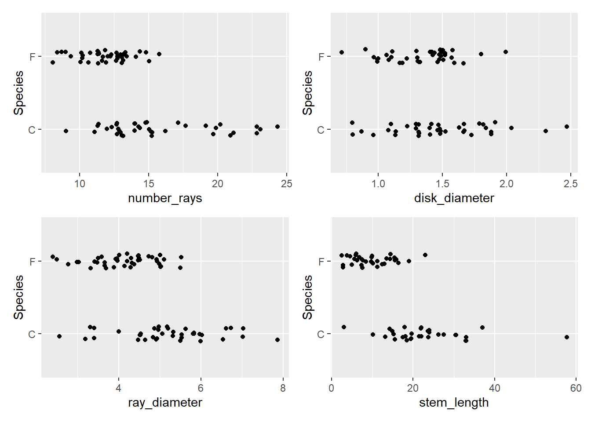

| Packages Used | |
|---|---|
| Package | Use |
| here | to easily load and save data |
| readr | to import the CSV file data |
| dplyr | to massage and summarize data |
| gt | to create nice-looking and informative graphs |
| rsample | to split data into training and test sets |
| purrr | to run the cross-validation |
| tidyr | to pivot the data frames |
| patchwork | combine plots |
| broom | Make predictions on models |
Project 2

(California Encelia Flower)
Write a few sentences about Encelia californica, Encelia farinosa, and the Fullerton Arboretum. You may also discuss what you learned about the iris dataset.
Why should someone care about being able to distinguish between these two species?
Main Objective
In your own words, describe the goal of this project.
Packages Used In This Analysis
Design and Data Collection
In this section, describe how you collected the data. (If you weren’t in class that day, ask your classmates how the data was collected.)
Briefly describe the limitations of your data collection method. What difficulties did you (or the class collectively) have collecting the data? What choices did you (or the class collectively) make during the data collection process that someone else might choose differently?
flower<-flower|>
mutate(Species=Species|>
as.factor())
contrasts(flower$Species) F
C 0
F 1Training-Test Split
set.seed(14)
flower_split <- flower |>
initial_split( strata= Species,
prop=0.80
)
flower_train<- training(flower_split)
flower_test <- testing(flower_split)There isn’t much data massaging we need to do here, because we were very deliberate about how we set up our data sheet and how we recorded the data on it. However, you may need to do things like import the data and change the type of some variables.
At the end of this section, you should write code to randomly split the Encelia data into a training and test set and explain why a training and test set are useful/necessary for this objective.
Exploratory Data Analysis
Expand on the EDA you did in the Logistic Regression with Encelia activity. Explain what is going on in your graphs and summaries and how those insights relate to the models you will be building in the next section.
plot1<-ggplot(
data=flower_train,
mapping=aes(x=number_rays,y=Species)
) +geom_jitter(height=0.1)
plot2<-ggplot(
data=flower_train,
mapping=aes(x=disk_diameter,y=Species)
) +geom_jitter(height=0.1)
plot3<-ggplot(
data=flower_train,
mapping=aes(x=ray_diameter,y=Species)
) +geom_jitter(height=0.1)
plot4<-ggplot(
data=flower_train,
mapping=aes(x=stem_length,y=Species)
) +geom_jitter(height=0.1) (plot1+plot2+plot3+plot4)
ggplot(flower, aes(x = number_rays, y = ray_diameter,
color = Species, shape = Species)) +
geom_point(size = 3) +
scale_color_manual(values = c("F" = "#E69F00", "C" = "#56B4E9")) +
labs(title = "Encelia Species Comparison",
subtitle = "Ray Flowers Characteristics",
x = "Number of Ray Flowers",
y = "Ray Diameter ") +
theme_bw() +
theme(legend.position = "top")
Modeling
set.seed(453)
flower_cv<-flower_train|>
vfold_cv(
v=5,
repeats=3
)flower_pred <- function(split){
train<-analysis(split)
valid<-assessment(split)
flower_allglm <- glm (
Species~disk_diameter + number_rays + ray_diameter + stem_length,
data= train,
family = "binomial"
)
flower_3glm <- glm (
Species~disk_diameter + number_rays + ray_diameter,
data= train,
family = "binomial"
)
flower_2glm <- glm (
Species~stem_length + number_rays,
data= train,
family = "binomial"
)
flower_1glm <- glm (
Species~ number_rays,
data= train,
family = "binomial"
)
flower_nullglm <- glm (
Species~1,
data= train,
family = "binomial"
)
valid_pred <- valid|>
mutate(
pred_all= predict(flower_allglm, newdata=valid, type = "response" ),
pred_null= predict(flower_nullglm, newdata=valid, type = "response" ),
pred1= predict(flower_1glm, newdata=valid, type = "response" ),
pred2= predict(flower_2glm, newdata=valid, type = "response" ),
pred3= predict(flower_3glm, newdata=valid, type = "response" )
)
}mapped_pred<- map(
flower_cv$splits,
flower_pred
)Warning: glm.fit: fitted probabilities numerically 0 or 1 occurred
Warning: glm.fit: fitted probabilities numerically 0 or 1 occurred
Warning: glm.fit: fitted probabilities numerically 0 or 1 occurredmapped_pred_df <- mapped_pred |>
bind_rows(.id = "folds")mapped_pred_df|>
select(folds,Species,pred1,pred2,pred3,pred_null,pred_all)# A tibble: 237 × 7
folds Species pred1 pred2 pred3 pred_null pred_all
<chr> <fct> <dbl> <dbl> <dbl> <dbl> <dbl>
1 1 C 0.552 0.314 0.108 0.524 0.0156
2 1 C 0.0242 0.0369 0.0674 0.524 0.155
3 1 C 0.317 0.319 0.276 0.524 0.147
4 1 C 0.0970 0.0104 0.0627 0.524 0.0102
5 1 C 0.552 NA 0.323 0.524 NA
6 1 C 0.317 0.299 0.216 0.524 0.0735
7 1 C 0.149 0.429 0.0700 0.524 0.179
8 1 C 0.552 0.0346 0.153 0.524 0.00113
9 1 F 0.552 0.262 0.370 0.524 0.135
10 1 F 0.552 0.671 0.688 0.524 0.769
# ℹ 227 more rowspred_comb<- mapped_pred_df |>
pivot_longer(
cols = starts_with("pred"),
names_to = "model",
values_to = ".pred_C"
) %>%
mutate(
.pred_F = 1 - .pred_C
)
pred_comb %>%
select(
Species, model, folds, .pred_F, .pred_C
)# A tibble: 1,185 × 5
Species model folds .pred_F .pred_C
<fct> <chr> <chr> <dbl> <dbl>
1 C pred_all 1 0.984 0.0156
2 C pred_null 1 0.476 0.524
3 C pred1 1 0.448 0.552
4 C pred2 1 0.686 0.314
5 C pred3 1 0.892 0.108
6 C pred_all 1 0.845 0.155
7 C pred_null 1 0.476 0.524
8 C pred1 1 0.976 0.0242
9 C pred2 1 0.963 0.0369
10 C pred3 1 0.933 0.0674
# ℹ 1,175 more rows# label: get average brier score
brier_all_models <- pred_comb |>
group_by(model, folds) |>
brier_class(
truth = Species,
.pred_F
)
brier_all_models |>
ungroup() |>
group_by(model) |>
summarise(
mean_brier = mean(.estimate),
se_brier = sd(.estimate) / sqrt(4) # 4 estimates (from 4 folds)
) |>
arrange(mean_brier)# A tibble: 5 × 3
model mean_brier se_brier
<chr> <dbl> <dbl>
1 pred_all 0.0557 0.0163
2 pred2 0.0776 0.0186
3 pred3 0.144 0.0329
4 pred1 0.182 0.0294
5 pred_null 0.254 0.00440# label: fit final model
flower_final_glm <- glm(
Species ~ disk_diameter + number_rays + ray_diameter + stem_length,
data = flower_train,
family = "binomial"
)flower_class_predictions <- flower_final_glm |>
augment(newdata = flower_test, type.predict = "response") |>
mutate(
.pred_F = .fitted,
.pred_C = 1 - .pred_F, # Fixed: AD probability should be 1 - MC probability
.pred_class = if_else(.fitted >= 0.5, "F", "C") |>
as.factor()
)
flower_class_predictions |>
select(Species, .pred_class, .pred_F, .pred_C)# A tibble: 21 × 4
Species .pred_class .pred_F .pred_C
<fct> <fct> <dbl> <dbl>
1 F C 0.375 0.625
2 F F 0.981 0.0190
3 F F 0.999 0.000982
4 F F 0.981 0.0189
5 C C 0.175 0.825
6 F F 0.989 0.0115
7 F F 0.999 0.00135
8 C C 0.000105 1.00
9 C F 0.770 0.230
10 C C 0.491 0.509
# ℹ 11 more rows# label: get confusion matrix
flower_class_predictions |>
conf_mat(
truth = Species,
estimate = .pred_class
) Truth
Prediction C F
C 6 1
F 1 8flower_class_predictions_null <- flower_nullglm |>
augment(newdata = flower_test, type.predict = "response") |>
mutate(
.pred_F = .fitted,
.pred_C = 1 - .pred_F, # Fixed: AD probability should be 1 - MC probability
.pred_class = if_else(.fitted >= 0.5, "F", "C") |>
as.factor()
)
flower_class_predictions_null |>
select(Species, .pred_class, .pred_F, .pred_C)# A tibble: 21 × 4
Species .pred_class .pred_F .pred_C
<fct> <fct> <dbl> <dbl>
1 F F 0.519 0.481
2 F F 0.519 0.481
3 F F 0.519 0.481
4 F F 0.519 0.481
5 C F 0.519 0.481
6 F F 0.519 0.481
7 F F 0.519 0.481
8 C F 0.519 0.481
9 C F 0.519 0.481
10 C F 0.519 0.481
# ℹ 11 more rows# label: get confusion matrix
#Null just says everything is C
flower_class_predictions3 <- flower_3glm |>
augment(newdata = flower_test, type.predict = "response") |>
mutate(
.pred_F = .fitted,
.pred_C = 1 - .pred_F, # Fixed: AD probability should be 1 - MC probability
.pred_class = if_else(.fitted >= 0.5, "F", "C") |>
as.factor()
)
flower_class_predictions3 |>
select(Species, .pred_class, .pred_F, .pred_C)# A tibble: 21 × 4
Species .pred_class .pred_F .pred_C
<fct> <fct> <dbl> <dbl>
1 F C 0.376 0.624
2 F F 0.902 0.0976
3 F F 0.945 0.0549
4 F F 0.777 0.223
5 C C 0.270 0.730
6 F F 0.723 0.277
7 F F 0.949 0.0515
8 C C 0.0130 0.987
9 C C 0.297 0.703
10 C C 0.410 0.590
# ℹ 11 more rows# label: get confusion matrix
flower_class_predictions3 |>
conf_mat(
truth = Species,
estimate = .pred_class
) Truth
Prediction C F
C 9 1
F 1 10flower_class_predictions2 <- flower_2glm |>
augment(newdata = flower_test, type.predict = "response") |>
mutate(
.pred_F = .fitted,
.pred_C = 1 - .pred_F, # Fixed: AD probability should be 1 - MC probability
.pred_class = if_else(.fitted >= 0.5, "F", "C") |>
as.factor()
)
flower_class_predictions2 |>
select(Species, .pred_class, .pred_F, .pred_C)# A tibble: 21 × 4
Species .pred_class .pred_F .pred_C
<fct> <fct> <dbl> <dbl>
1 F C 0.487 0.513
2 F F 0.973 0.0274
3 F F 0.990 0.0101
4 F F 0.975 0.0249
5 C F 0.553 0.447
6 F F 0.968 0.0318
7 F F 0.999 0.000946
8 C C 0.000113 1.00
9 C F 0.972 0.0281
10 C F 0.561 0.439
# ℹ 11 more rows# label: get confusion matrix
flower_class_predictions2 |>
conf_mat(
truth = Species,
estimate = .pred_class
) Truth
Prediction C F
C 4 1
F 3 8flower_class_predictions1 <- flower_1glm |>
augment(newdata = flower_test, type.predict = "response") |>
mutate(
.pred_F = .fitted,
.pred_C = 1 - .pred_F, # Fixed: AD probability should be 1 - MC probability
.pred_class = if_else(.fitted >= 0.5, "F", "C") |>
as.factor()
)
flower_class_predictions1 |>
select(Species, .pred_class, .pred_F, .pred_C)# A tibble: 21 × 4
Species .pred_class .pred_F .pred_C
<fct> <fct> <dbl> <dbl>
1 F F 0.559 0.441
2 F F 0.795 0.205
3 F F 0.689 0.311
4 F F 0.795 0.205
5 C C 0.421 0.579
6 F F 0.559 0.441
7 F F 0.954 0.0463
8 C C 0.0145 0.986
9 C F 0.689 0.311
10 C C 0.421 0.579
# ℹ 11 more rows# label: get confusion matrix
flower_class_predictions1 |>
conf_mat(
truth = Species,
estimate = .pred_class
) Truth
Prediction C F
C 9 1
F 1 10# label: get confusion matrix
flower_class_predictions1 |>
conf_mat(
truth = Species,
estimate = .pred_class
) Truth
Prediction C F
C 9 1
F 1 10flower_class_predictions2 |>
conf_mat(
truth = Species,
estimate = .pred_class
) Truth
Prediction C F
C 4 1
F 3 8flower_class_predictions3 |>
conf_mat(
truth = Species,
estimate = .pred_class
) Truth
Prediction C F
C 9 1
F 1 10#flower_class_predictions_null null just says everything is a CPropose several logistic regression models and use cross-validation to select a best model, following the steps in the “Cross-Validation (Part 3)” video and the “Model Selection for Logistic Regression” activity.
Explain what your code is doing:
- What is logistic regression? Why are you doing it?
- Why did you choose each model that you are considering?
- Why are you using cross-validation? How does it work?
- Which model are you selecting as the best model? Why?
Fit the selected “best” model on the training set and make predictions on the test set. Overall, how accurately is your model making predictions?
Insights
Think about how you might visualize the model’s predictions and the accuracy of those predictions. Then, create and describe one or more visualizations in line with your ideas.
Which flowers (if any) were incorrectly predicted? Why do you suspect that they were incorrectly predicted?